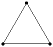
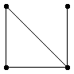
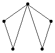
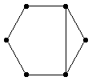
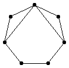
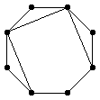
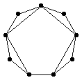
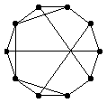
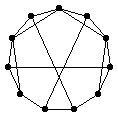
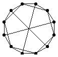

3(n-1)/2
3(n-1)/2 by connecting a bunch of triangles.
by connecting a bunch of triangles.If we let E(n) denote the maximum number of edges for n vertices, how does E(n) grow? In particular, what is the limiting value of E(n) / n2 as n → ∞?
Ulrich Schimke also defined a class of graphs with this property. If S is a set of positive integers, let G(S,n) be the graph with vertices numbered 0 through n–1, and edges between all vertices k and sk, for s in S. Thus G({1,2},5) is the graph with 5 vertices above. He notes that if S={1,2,7,22,67,...} in which each term in the sequence is one more than 3 times the previous term, then G(S,n) has the desired property.
Ulrich Schimke also showed that for every n, there exists a k with E(kn) ≥ k E(n) + kn. He accomplishes this by taking k copies of the graph with n vertices and E(n) edges, and connecting them in a cycle in a way that creates no new 4-cycles. He uses this to construct a sequence a(n) so that E(a(n))/a(n) → ∞. Since E(n) is super-additive, E(n+m) ≥ E(n)+E(m), we know E(n)/n has a limit, and therefore this limit is infinite.
Trevor Green proved that E(n) ≤ n E(n-1)/(n-2). His proof: Consider D(n) = n(n–1)/2 – E(n), the number of edges we must delete from Kn to get a graph with no 4-cycles. Now let's consider Kn. If we delete one vertex from it, we are left with Kn–1, so we must delete D(n–1) of the remaining edges to have no 4-cycles. There are n ways to delete one vertex, so (counting multiple deletions) we must delete n D(n-1) edges from Kn. But every edge in Kn is in (n–2) of these copies of Kn-1, so in Kn, we have to delete at least n D(n–1)/(n–2) edges. So D(n) ≥ n D(n–1)/(n–2). When we substitute our formula for E(n) into this inequality, we get the result.
Philippe Fondanaiche conjectures that E(n) grows like n ln n.
Tetsuji Nishikura showed that E(n) ≥ 3(n-1)/2 by connecting a bunch of triangles.
Joseph DeVincentis found the best known values for E(n) for n ≤ 15. These values are in the table below. Philippe Fondanaiche conjectured some values for n > 15.
| n | 1 | 2 | 3 | 4 | 5 | 6 | 7 | 8 | 9 | 10 | 11 | 12 | 13 | 14 | 15 | 16 | 17 | 18 | 19 | 20 | 21 | 22 |
|---|---|---|---|---|---|---|---|---|---|---|---|---|---|---|---|---|---|---|---|---|---|---|
| E(n) | 0 | 1 | 3 | 4 | 6 | 7 | 9 | 11 | 13 | 16 | 18 | 21 | 24 | 27 | 30 | 33 | 36 | 39 | 42 | 46 | 50 | 52 |
|  |  |  |  |  |
|  |  |  |  |  |
Olexandr Ravsky proved that E(n) = n3/2/2 (1+O(1/ln n)). Here is his short paper in postscript. He says that this bound has been known since the 1960's. In 1996, Furedi computed E(n) exactly for all numbers n=q2+q+1, where q is a prime power greater than 13.
Alexander Engstrom corrected the values of E(13) and E(14) and pointed out sequence A006855 of the Encyclopedia of Integer Sequences.
If you can extend any of these results, please e-mail me. Click here to go back to Math Magic. Last updated 5/26/03.